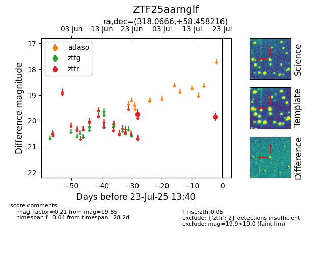

Target ZTF25aarnglf at 2025-07-23 13:40, see:
FINK: fink-portal.org/ZTF25aarnglf
Lasair: lasair-ztf.lsst.ac.uk/objects/ZTF25aarnglf
ALeRCE: alerce.online/object/ZTF25aarnglf
alt names
ZTF25aarnglf (ztf,fink)
coordinates:
equatorial (ra, dec) = (318.0666,+58.45822)
galactic (l, b) = (97.4295,+6.90357)
photometry
last ztfr=19.85
2 ztfr detections
